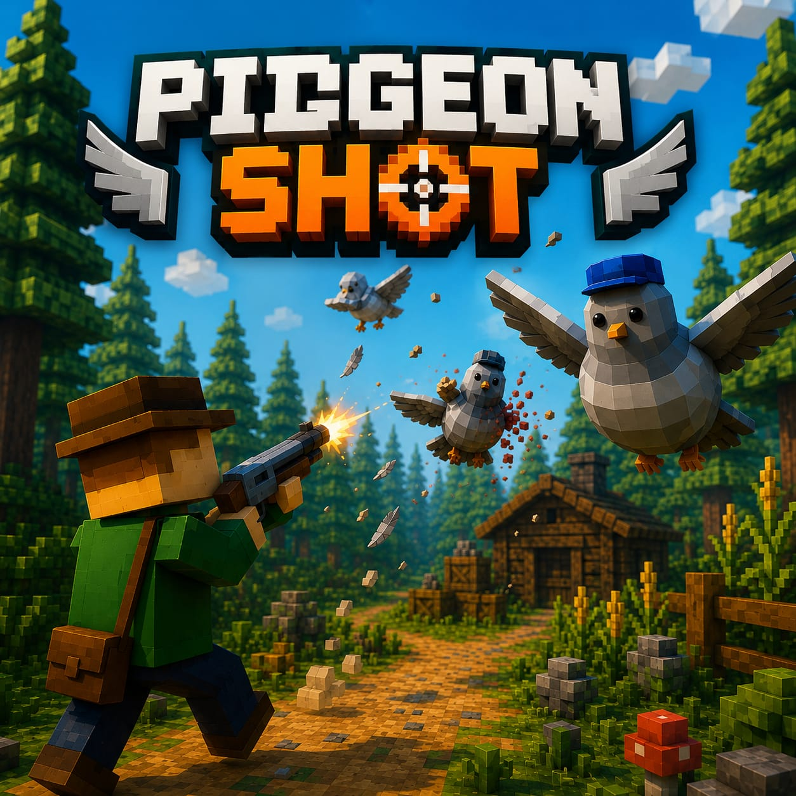

GALERÍA DEL JUEGO


Un juego de realidad virtual donde proteges tus cultivos de trigo de las palomas invasoras. Vive la experiencia de disparo VR.

Pigeon Shot VR es un videojuego desarrollado en Unity con realidad virtual. El objetivo del jugador es proteger los cultivos de trigo eliminando las palomas invasoras. Este proyecto académico integra programación, diseño 3D, desarrollo web y bases de datos.